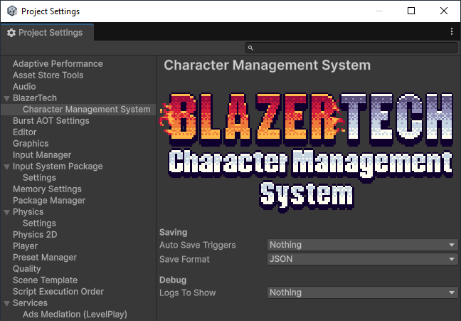

Project Settings
All global settings for the BlazerTech Character Management System are managed through the Project Settings window.
Located under Edit > Project Settings > BlazerTech > Character Management System.

Saving Settings
Configure how and when Character Groups are automatically saved to disk.
Auto Save Triggers
A multi-select dropdown defining the events that trigger automatic saves.
| Option | Description |
|---|---|
| Game Exit | Saves all character groups when the application quits. |
| Character Creator Save | Saves all character groups whenever a character is saved from the Character Creation Menu. |
| Scene Change | Saves all character groups when the active scene changes. |
Save Format
Select the format used when Character Groups are saved to disk.
| Format | Description |
|---|---|
| JSON (Default) | Human-readable format (.json). Easy to open and manually edit. |
| Binary | Compact binary format (.bin). Almost impossible to read or modify manually. |
Note
Binary saves are more secure against tampering, while JSON saves are ideal during development and debugging.
Debug Options
These settings control what types of logs are shown to help debugging issues with the BlazerTech Character Management System.
Logs to show
A multi-select dropdown which decides what kind of logs are shown.
| Log Type | Description |
|---|---|
| Character Group Save Trigger Logs | Logs when character groups are saved. |
| New Character Created Logs | Logs when new characters of any type are created. |
| Character Recreated From DTO Logs | Logs when a character is reconstructed from saved data (DTO). |
| Loaded Character Updated Logs | Logs when an already loaded character is modified. |
| Character Creation Menu Logs | Logs events within the Character Creation Menu. |
Tip
These logs are meant for debugging purposes and should usually be disabled in release builds.